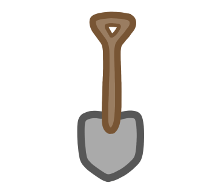
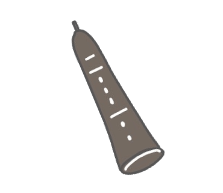
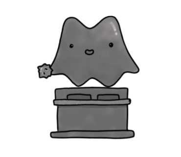

Nameplate 
Item type: 001 (Uncommon: 065, Rare: 129)Crafting cost:
Status boost: +1
Description: You can name your Murasaki-san by minting a name SBT to your wallet. The cost of maning is 100 coins and 100 leaves. The name can be a maximum of 12 characters, and is case sensitive. Only the characters a-z, A-Z, 0-9, and space are allowed. Duplicate names are not allowed.
Mr.Astar
Item type: 002 (Uncommon: 066, Rare: 130)Crafting cost:
Status boost: +1
Description: You will meet a little roommate who will work together with your Murasaki-san while mining. There are three types of little roommates, and Mr.Astar is one of them. Sometimes he enjoys interacting with your Murasaki-san.
Onigiri 
Item type: 003 (Uncommon: 067, Rare: 131)Crafting cost:
Status boost: +1
Description: Feeding for your Murasaki-san will be more luxurious (but the amount of exp gained will not change ;) You can give delicious-looking onigiri for Your Murasaki-san.
Helmet
Item type: 004 (Uncommon: 068, Rare: 132)Crafting cost:
Status boost: +1
Description: A wearable helmet will be placed in your house. By clicking on it, you can put the helmet on your Murasaki-san. There are three types of hats, and Murasaki-san can wear only one at a time. Murasaki-san loves to wear hats :)
Lucky Dice 
Item type: 005 (Uncommon: 069, Rare: 133)Crafting cost:
Status boost: +1
Description: A 20-sided dice will be placed in your house, and you can roll it once per day to get a new dice roll (transaction occurs). Your Murasaki-san's luck will increase for the day depending on the dice roll (specifically, 1/10 of the moving average of the last 3 dice rolls).
Wall Sticker
Item type: 006 (Uncommon: 070, Rare: 134)Crafting cost:
Status boost: +1
Description: The walls of your house will be adorned with tree stickers. The level of sticker luxury will correspond to your house score, with a total of 12 levels available. The higher level stickers will glows at night.
Hammock 
Item type: 007 (Uncommon: 071, Rare: 135)Crafting cost:
Status boost: +1
Description: A freestanding hammock will be placed in your house, and Murasaki-san will sleep on it at night.
Token Chest 
Item type: 008 (Uncommon: 072, Rare: 136)Crafting cost:
Status boost: +1
Description: A chest will be placed in your house. When you click to open it, token balls will pop out based on the number of tokens in your wallet (for example, if you have $SDN token in your wallet, a $SDN token ball will pop out). Murasaki-san will play by kicking these balls.
Knit Hat 
Item type: 009 (Uncommon: 073, Rare: 137)Crafting cost:
Status boost: +1
Description: A wearable kinit hat will be placed in your house. Clicking on it allows you to put the hat on your pets (Mr.Astar, Ms.Ether, or Dr.Bitco). Pets also love to wear hats :)
House of Fluffy
Item type: 010 (Uncommon: 074, Rare: 138)Crafting cost:
Status boost: +1
Description: A fluffy blanket will be placed in your house, and your fluffies will stick it. By clicking on it, sticked fluffies will pop out from the blanket and your Murasaki-san will be happy.
Crown 
Item type: 011 (Uncommon: 075, Rare: 139)Crafting cost:
Status boost: +1
Description: A shiny crown will be placed on the bear. When you click it, it will start to blink.
Clarinet 
Item type: 012 (Uncommon: 076, Rare: 140)Crafting cost:
Status boost: +1
Description: A clarinet will be placed in your house, and once you have at least one instrument, your Murasaki-san can begin practicing. It takes a long time to master the instrument, and the difficulty of mastering each instrument is the same. However, higher STR and using higher rarity insturument will increase efficiency of the practice of clarinet.
Horn
Item type: 013 (Uncommon: 077, Rare: 141)Crafting cost:
Status boost: +1
Description: A horn will be placed in your house, and once you have at least one instrument, your Murasaki-san can begin practicing. It takes a long time to master the instrument, and tha difficulty of mastering each instrument is the same. However, higher STR and using higher rarity insturument will increase efficiency of the practice of horn.
Cake 
Item type: 014 (Uncommon: 078, Rare: 142)Crafting cost:
Status boost: +1
Description: Feeding for your Murasaki-san will be more luxurious (but the amount of exp gained will not change ;) You can give yummy-looking cake for Your Murasaki-san.
Fortune Statue 
Item type: 015 (Uncommon: 079, Rare: 143)Crafting cost:
Status boost: +1
Description: A statue will be placed in your house. This stone statue is said to bring good luck and happiness to your house (although in reality, it has no effect other than increasing STR by 1 ;) Its eyes may shine at night...
Door of Travel
Item type: 016 (Uncommon: 080, Rare: 144)Crafting cost:
Status boost: +1
Description: Comming soon.
Music Box 
Item type: 017 (Uncommon: 081, Rare: 145)Crafting cost:
Status boost:
Description: Comming soon.
Music Box
Item type: 017 (Uncommon: 081, Rare: 145)Crafting cost:
Status boost:
Description: Comming soon.